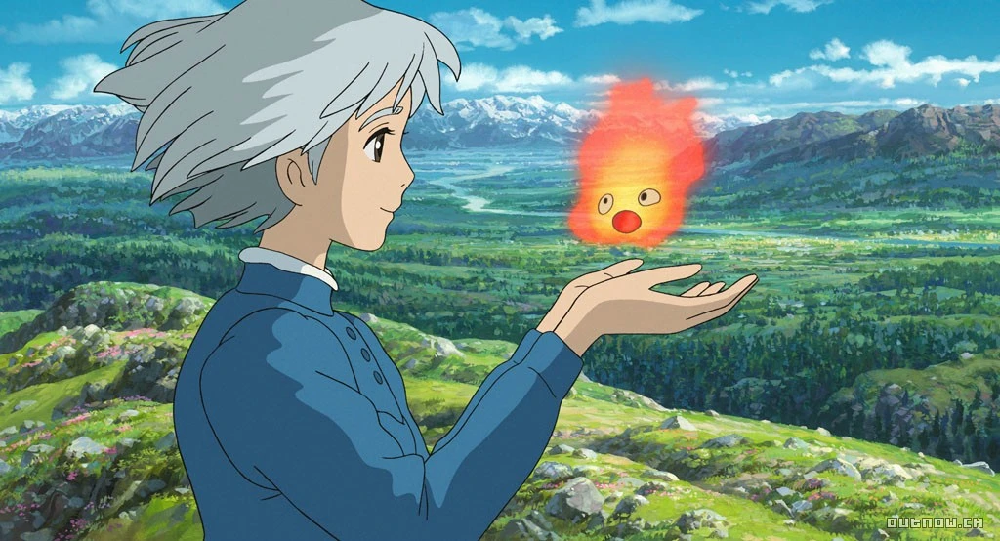
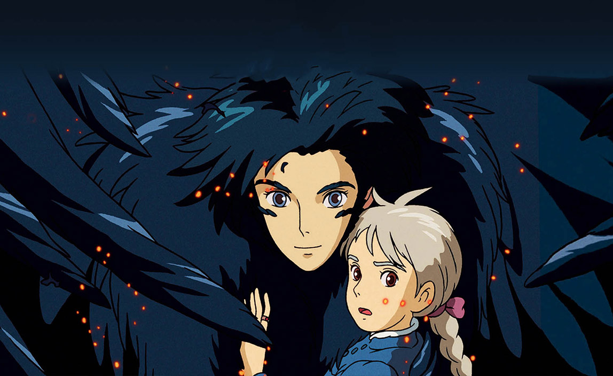

Howl's Moving Castle (Japanese: ハウルの動く城, Hepburn: Hauru no Ugoku Shiro) is a 2004 Japanese animated fantasy film written and directed by Hayao Miyazaki. It is loosely based on the 1986 novel of the same name by British author Diana Wynne Jones. The film was produced by Toshio Suzuki, animated by Studio Ghibli and distributed by Toho. The Japanese voice cast featured Chieko Baisho and Takuya Kimura, while the English dub version starred Jean Simmons, Emily Mortimer, Lauren Bacall, Christian Bale, Josh Hutcherson and Billy Crystal. The film is set in a fictional kingdom where both magic and early twentieth-century technology are prevalent, against the backdrop of a war with another kingdom. It tells the story of Sophie, a young milliner who is turned into an elderly woman by a witch who enters her shop and curses her. She encounters a wizard named Howl and gets caught up in his resistance to fighting for the king.
Miyazaki said Howl's Moving Castle was his favorite creation, explaining, "I wanted to convey the message that life is worth living, and I don't think that's changed."The film is significantly thematically different from the novel; while the novel focuses on challenging class and gender norms, the film focuses on love, personal loyalty. Howl's Moving Castle premiered at the 61st Venice International Film Festival on 5 September 2004, and was theatrically released in Japan on 20 November 2004. It went on to gross $190 million in Japan and $236 million worldwide, making it one of the most commercially successful Japanese films in history. The film received critical acclaim, with particular praise toward its visuals and Miyazaki's presentation of the themes. It was nominated for the Academy Award for Best Animated Feature at the 78th Academy Awards, but lost to Wallace & Gromit: The Curse of the Were-Rabbit. It won several other awards, including four Tokyo Anime Awards and a Nebula Award for Best Script.
The film notably has Chieko Baisho, who voices Sophie, sing the theme song The Promise of the World, similar to Tokiko Kato who played Gina in Porco Rosso. The Ghibli Museum-exclusive animated short, The Day I Bought A Star, has ties to this film.
Sophie, a needlewoman who works at her family's hat shop, is a responsible-yet-plain 18-year-old girl who goes to Cesari's cafe to visit her sister Lettie when she encounters by chance a mysterious wizard named Howl. This encounter arouses the evil Witch of the Waste, who later enters the hat shop and transforms Sophie into a 90-year-old woman. As the curse prevents her from telling anyone of her condition, Sophie decides to leave her home of Market Chipping and seek out a cure out in the waste.
Meanwhile, in Sophie's home country of Ingary, the beginning of a war has sparked against another neighboring town - following the disappearance of the other realm's Crown Prince. Slowly the war begins to creep into Sophie's country itself. Howl receives summons from the King, who orders his various assumed identities to fight in the war. However, Howl cowers in his bedroom and comes up with an idea to send Sophie to pose as his mother, announcing that he would be useless. At the palace in the capital of Kingsbury, Sophie runs into an asthmatic dog, Heen, who she thinks is Howl undercover. She also meets the Witch of the Waste, who rides on a palanquin carried by two blob men. Magical wards disintegrate the Witch's henchmen and she is forced to travel by foot. They begin to race up the stairs.
Once they are inside the castle, Heen and Suliman's servant Kosho lead Sophie to the greenhouse while the Witch of The Waste finds herself a place to sit down - only to find her magical powers drained by Suliman as a punishment. This causes her to regress into a harmless old woman with few memories of her past actions. Suliman tells Sophie that Howl will meet the same fate if he does not contribute to the war. As Sophie vehemently protests these measures, the Witch's spell temporarily weakens due to the love in her words. This causes Sophie to change briefly to her younger self, then regress to her older persona. Madame Suliman realizes Sophie's true relation to Howl and her romantic feelings towards him. Howl then arrives to rescue Sophie, Suliman tries to entrap Howl by summoning star children and revealing his monstrous form, but with Sophie's help, they escape. Howl suggests drawing their pursuers away as Sophie make her way back to the castle. He offers her a magic ring which would help guide her back safely.
Sophie learns that Howl is able to transform into a bird-like creature to interfere in the war, but each transformation makes it more difficult for him to return to human form. Howl, in an attempt to appease Sophie, transforms a part of the castle's into her old home by the hat shop, and even shows her a secret garden he used to stay in his childhood. Sophie fears that Howl is preparing to leave them, as his remaining time as a human is limited, and he returns to interfering in the war. Sophie's mother Honey shows up under Suliman's control and leaves behind a bag containing a "peeping bug" under her orders. The former Witch of the Waste discovers it and promptly destroys the bug by tossing it into Calcifer who gets sick, rendering him unable to conceal the castle.
A few hours later, the city is carpet-bombed by enemy aircraft while Suliman's Blob men invade the hat shop. After arriving just in time to protect the shop from the bombing, Howl draws the guards away after healing Calcifer. He tells Sophie he is not going to run away anymore because he has something he wants to protect before leaving to interfere with the war. Deducing that Howl must be saved, Sophie moves everyone out of the castle and removes Calcifer from the fireplace, destroying the castle. She offers Calcifer some of her braided hair to give him enough strength to power a portion of the castle. They head toward Howl when the former Witch of the Waste discovers Howl's heart within Calcifer. Sophie pours water on Calcifer to make her let go of the heart, making Calcifer lose his power. The segment of the castle splits, and she and Heen fall down a chasm.Using her magic ring, Sophie makes her way toward Howl's heart, and enters through the door into Howl's childhood. She stumbles into his old cottage and looks upon his old things. Outside the marshlands, she sees dozens of falling stars vanish as they land on the earth. She then sees Howl and Calcifer meet: Howl eats Calcifer, who gains his heart. Sophie finds Howl, having now lost his human consciousness in bird form. They head back to the group, and Sophie asks the Witch for Howl's heart. She gives it to her and places the heart back in Howl, resurrecting him and freeing Calcifer. She kisses the scarecrow who reveals that he is actually the missing prince. Heen shows the scene of their happy end to Suliman, and the war is finally over. Howl, Sophie, and the others return home from the end of the war, flying high above the bomber planes in a moving house.